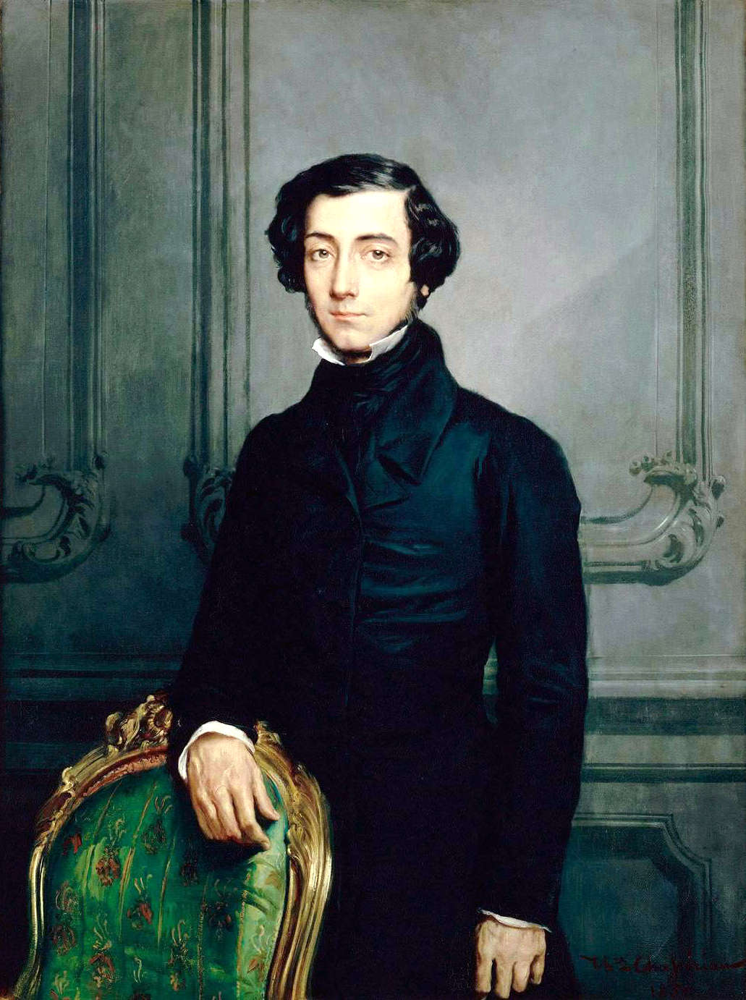

I / Athens · 399 BCE
When freedom becomes its own destruction.
In 399 BCE, Athens condemned Socrates to death through the collective judgment of its citizens. His execution exposes a philosophical paradox: democracy harbors the mechanisms of its own potential destruction through collective injustice, political demagoguery, and the erosion of individual liberty.
Plato, Apology 38a
II / Collective injustice
A verdict is not justice.
Socrates’ condemnation illustrates that majority judgment does not necessarily establish moral righteousness. Centuries later, James Madison warned that majority factions could sacrifice the rights of other citizens. Democratic procedures may legitimize decisions without establishing their justice.
Plato, Apology 32b–c; Madison
III / Political demagoguery
Freedom can undo freedom.
Plato warned that excessive liberty could give rise to tyranny. The collapse of the Weimar Republic illustrates this danger: Nazi electoral gains, institutional manipulation, and political coercion enabled Hitler to consolidate authoritarian power. Democratic institutions themselves became instruments of democratic destruction.
Plato, Republic 564a; USHMMIV / Political and social tyranny
Oppression does not require a dictator.
Tocqueville warned against unlimited majority authority. Mill extended this concern to the tyranny of prevailing social opinion. When conformity becomes safer than independent thought, citizens may possess freedom of expression while fearing its exercise, weakening democracy’s capacity for self-correction.
Tocqueville, ch. 15; Mill, ch. 1

V / Concession · Legacy
Socrates dies. The question remains.
Democracy possesses mechanisms for self-correction, but their survival depends upon constitutional restraint and intellectual freedom. A democracy should be measured not only by the freedom it grants the majority to govern but also by the freedom it preserves for those who dare to disagree.
Plato, Phaedo 117c–118a; Madison